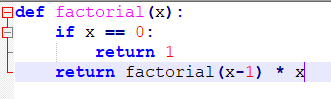

Souleiman Ayoub
Souleiman Ayoub
What it is? (in brief):
This is a chess program that I have programmed in python and that integrates many artificiel intelligences (machine learning and others). My partner, Leko, integrated Stockfish9, LeelaChessZero, Gull and Komodo and I programmed the neural network and the alpha-beta prunning.
The game is dotted with many game modes such as player vs player, player vs AI and AI vs AI.
Project display :
 Our project consists of a chess game that gives the user the opportunity to play with one of these friends, play against an artificial intelligence or see 2 artificial intelligences play against each other. The program also allows the player to leave his game at any time, start over until his decision of the game mode, display all the shots that have been played and the possibility to go back on a that we regret (these features are however not accessible when the user chooses the game mode where an artificial intelligence play against another). In addition, the program automatically detects if the game is over and asks the user if he wants to start again. Finally, the program is designed not to give the user the chance to make an illegal move (that is, a blow that would put his own king in check).
Our project consists of a chess game that gives the user the opportunity to play with one of these friends, play against an artificial intelligence or see 2 artificial intelligences play against each other. The program also allows the player to leave his game at any time, start over until his decision of the game mode, display all the shots that have been played and the possibility to go back on a that we regret (these features are however not accessible when the user chooses the game mode where an artificial intelligence play against another). In addition, the program automatically detects if the game is over and asks the user if he wants to start again. Finally, the program is designed not to give the user the chance to make an illegal move (that is, a blow that would put his own king in check).
How the program works:
When the program starts, we have access to a menu that allows us to choose the game mode of the program. If we click on the button man vs man, we end up on the game where we have several features at the bottom right.


Obviously, it is possible to play to failure, but we can also cancel a shot (as can be seen from the image on the left to the image on the right).
It is also possible to display the list of shots that have been played and the program is able to automatically detect an end of the game and ask if the user wants to start again.

The program also detects when there is a promotion and asks the user what he wants as a play (if he clicks cancel his automatically chooses the queen as it is the most chosen one). The program also refuses to let the user play an illegal move.

When the user chooses either the man vs. machine game mode or the machine vs machine mode, the program asks him which artificial intelligence he wants to play, if the artificial intelligence needs to be told the number of moves in advance he can see, the program asks the user the number of moves in advance and, if the user chose the man vs machine mode, the program asks the user if he wants to start.

Finally, when the user chooses machine vs. machine, the features on the right are no longer accessible because the parts are more or less deterministic.
How algorithms work:
MiniMax algorithm with alpha-beta calibration:
The basic concept of the minimax algorithm is to simply try every possible move considering that our opponent will be perfect and that he will aim to maximize his advantage (which is the counterpart of minimizing your advantage). From now on, I'll talk about the benefit in a quantitative way since the minimax algorithm requires that the state of a current game can be numeric and so I'm going to refer to the advantage right now at a positive score and at a disadvantage at a negative score. That's okay, so the goal of artificial intelligence will be to maximize your own score.
Prerequisites:


The factorial function could be calculated thanks to a recursive function (it calls the factorial function in the factorial function):

For failures, the minimax algorithm will be implemented as follows. We will call recursively and alternately the method that will aim to minimize the Alpha-Beta score, then the one that aims to maximize the Alpha-Beta score. It will be necessary to first call the maximizing method since this is what will determine the purpose of artificial intelligence and, as we said before, the goal is to maximize one's own score. The protocol that we followed for its implementation, in the context of the failures, was to iterate through all the possible movements, to make the change that this movement implies in the state of the chessboard (variable that we named " board "), go down one floor lower in the tree of possible moves (it will be the turn of the other player). After descending into the decision tree in a floor that is x shots down from where we were, we return a numerical value that represents the score associated with the state of the chessboard. Inevitably, as we go back up the decision tree, we will first have to make the opposite change of the blow we had previously made to the board so that we could try the other branches of the decision tree. Finally, we must have a good way to take the state of the chessboard and add the value of each of our coins and to subtract all the opposing coins.
The difference between these two is the fact that alpha beta is exponentially faster since the algorithm puts forward that there are times when looking at the rest of a branch is not very useful. Indeed, as you can see in the following picture, it is not necessary to see the other branches for the third movement, since the presence of 1 makes any other movement irrelevant. The algorithm considers that the opponent is perfect and therefore he will opt for the 1 or for a movement even worse if he goes on the third branch since the 1 is already smaller than the minimum of the first branch.
Machine learning with a neural network:
Prerequisites:
this equation gives this graph and this equation is called the sigmoid function.
Figure 4: https://www.desmos.com/calculator
The explanation:
Almost everything you need to know about neural networks is on this image.
Now, you have to explain the picture! To the right of the image is what is commonly called a perceptron (this is the equivalent of a neuron in a neural network). First of all, you have to know that the perceptron has an equal amount of "weights" that there will be input and its function is to take each entry and multiply it by the weight and to sum up all the entries * weights; the result of this sum will be named the entry total. Finally, we take the input total and move it into the activation function 1 / (1 + e ^ -x). The reason why it is this function is because this function is continuous, it will give a number between 0 and 1 and it is really easily differentiable. The fact that it is easily differentiable is that it will be useful to learn. Yes, the neural network is a structure that will learn as you have probably guessed by changing the value of these weights. In the case of a perceptron, the change will be done following this function:

Delta wj: This corresponds to the adjustment to be made to weight number j
C: It's the constant (I usually put 1 and weights will fit just slower than if I put a bigger number) T: This is the target -\> 1 if the perceptron was supposed to return 1 and 0 if it was supposed to return 1
A: It's the value that the output perceptron
Xj: This is the jth entry What is really interesting with this equation is that the higher the value of the output of the perceptron is away from the target the more the adjustment will be great. What will make adjustments usually should be done more and more precisely. But, is it the same equation when the perceptron is in a network? Answer no.
The equations for perceptrons are as follows:
The term "backpropagation" refers to the process of adjusting weights by taking what is assumed to be output in the last "layer" (which refers to the layer of the neural network) and through the derivative of the sigmoid function. If you are not confident of the result, you can have a proof of this on pages 110 to 113 in the book "Statistical learning theory". To give you an idea, a "normal" neuron system is about 30 times larger than the one I showed, but the basic idea remains the same.
How to take this structure and implement it in the context of a game of chess? :
What I said to myself at first glance is that I can only have one perceptron for the output and as you can see the equation does not prevent that from happening. I had two ideas. The first was to list all the possible moves and the second was to put 32 perceptrons. I chose the idea of 32 perceptrons because the first idea, there were far too many possibilities, in my opinion, but I think that some prefer the first way. You have probably wondered why the number 32. I need 2 coordinates consisting of 2 values per coordinate (x_start, y_start, x_final, y_final) and each one has 8 different possibilities (it can be a value from 0 to 7) being given that it is an 8x8 chessboard. The amount of perceptrons in the hidden layers are random. I tried not to put too much to try to avoid overfitting. To understand the "overfiting": https://machinelearningmastery.com/overfitting-and-underfitting-with-machine-learning-algorithms/
Project Outlook:
First, the priority would be to fix the bugs still present in the game:
As the UCIP engines are in the form of an ".exe" file, they are not accessible for Mac and Linux.
The program can not detect zero parts effectively.
As the integration of the PyQt5 GUI module is done through EasyGUI_QT (an old library not very up-to-date), the appearance of the game leaves something to be desired. It would be relevant to do this integration ourselves to have a more aesthetic result.
The neural network does not work as it should.
Then, once modifications are made, many projects could improve the program.
Instead of using PyGame in parallel with PyQt5, we could integrate PyGame in a PyQt5 window to take advantage of all the features offered by this library. The appearance of the game could then be greatly improved (menus, parameters, etc.).
It would be interesting to add a feature that allows to play online with other players.
We could add a "benchmark" system to more easily evaluate different engines.
Add a feature that would allow the user to add his own UCIP engine as an ".exe" file.
Add a "Tips" feature to find out what each engine would play in a given situation.
Compile the program in ".exe" or other format so that it can be downloaded and more accessible.
References
AlphaBeta : Anonymous. «Élagage alpha bêta» in Wikipedia, [https://en.wikipedia.org/wiki/Alpha%E2%80%93beta_pruning], (April, 10th 2018)
Neural Network : KULKARNI, Sanjeev et Gilbert HARMAN. An Elementary Introduction to Statistical LearningTheory, John Wiley & Sons, Inc., New Jersey, 2011, 196 p.